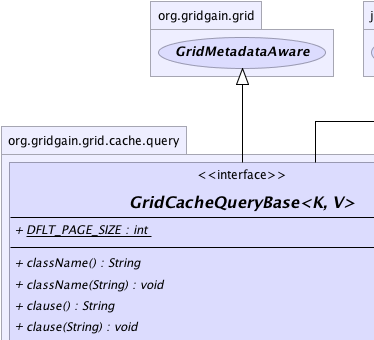
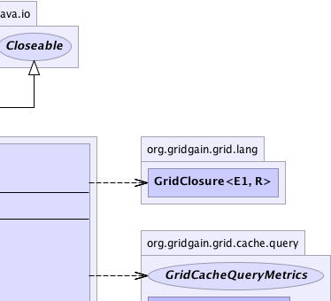
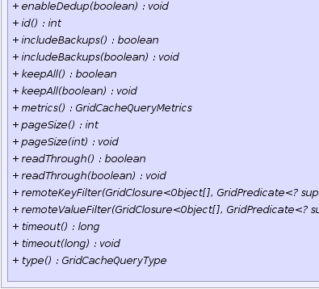
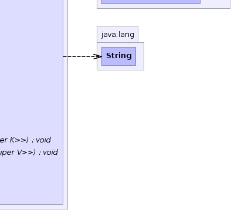

|
|

|
|

|

|

|
GridGain™ 3.1.0c
Community Edition |
|||||||||
| PREV CLASS NEXT CLASS | FRAMES NO FRAMES | |||||||||
| SUMMARY: NESTED | FIELD | CONSTR | METHOD | DETAIL: FIELD | CONSTR | METHOD | |||||||||
public interface GridCacheQueryBase<K,V>
Base API for all supported types of cache queries: GridCacheQuery, GridCacheReduceQuery,
GridCacheTransformQuery.
| Wiki | |
| Forum |
|  |  |
|  |  |
| Field Summary | |
|---|---|
static int |
DFLT_PAGE_SIZE
Default query page size. |
| Method Summary | |
|---|---|
String |
className()
Gets Java class name of the values selected by the query. |
void |
className(String clsName)
Sets Java class name of the values selected by the query. |
String |
clause()
Gets query clause. |
void |
clause(String clause)
Sets query clause. |
int |
id()
Gets query id. |
boolean |
includeBackups()
Gets query includeBackups flag. |
void |
includeBackups(boolean incBackups)
Sets whether or not to include backup entries into query result. |
boolean |
keepAll()
Gets query keepAll flag. |
void |
keepAll(boolean keepAll)
Sets whether or not to keep all query results local. |
GridCacheQueryMetrics |
metrics()
Gets query metrics. |
int |
pageSize()
Gets query result page size. |
void |
pageSize(int pageSize)
Sets result page size. |
boolean |
readThrough()
Gets query readThrough flag. |
void |
readThrough(boolean readThrough)
Flag indicating whether values should be read-through from persistent storage if not available in memory. |
void |
remoteKeyFilter(GridClosure<Object[],GridPredicate<? super K>> factory)
Optional filter factory to be used on queried nodes to create key filters prior to visiting or returning key-value pairs to user. |
void |
remoteValueFilter(GridClosure<Object[],GridPredicate<? super V>> factory)
Optional filter factory to be used on queried nodes to create value filters prior to visiting or returning key-value pairs to user. |
long |
timeout()
Gets query timeout. |
void |
timeout(long timeout)
Sets query timeout. |
GridCacheQueryType |
type()
Gets query type. |
void |
type(GridCacheQueryType type)
Sets query type. |
| Methods inherited from interface org.gridgain.grid.GridMetadataAware |
|---|
addMeta, addMetaIfAbsent, addMetaIfAbsent, allMeta, copyMeta, copyMeta, hasMeta, hasMeta, meta, putMetaIfAbsent, putMetaIfAbsent, removeMeta, removeMeta, replaceMeta |
| Methods inherited from interface java.io.Closeable |
|---|
close |
| Field Detail |
|---|
static final int DFLT_PAGE_SIZE
| Method Detail |
|---|
int id()
void type(GridCacheQueryType type)
type - Query type.GridCacheQueryType type()
void clause(String clause)
clause - Query clause.@Nullable String clause()
void className(String clsName)
clsName - Java class name of the values selected by the query.@Nullable String className()
void pageSize(int pageSize)
GridCacheQueryBase.DFLT_PAGE_SIZE will be used.
Results are returned from queried nodes one page at a tme.
pageSize - Page size.int pageSize()
void timeout(long timeout)
timeout - Query timeout.long timeout()
void keepAll(boolean keepAll)
true.
keepAll - Keep results or not.boolean keepAll()
keepAll flag.
keepAll flag.void includeBackups(boolean incBackups)
false by default.
incBackups - Query includeBackups flag.boolean includeBackups()
includeBackups flag.
includeBackups flag.void readThrough(boolean readThrough)
nulls if 'invalidation'
mode is set on cache transactions.
readThrough - Flag indicating whether to read through.boolean readThrough()
readThrough flag.
readThrough flag.
void remoteKeyFilter(@Nullable
GridClosure<Object[],GridPredicate<? super K>> factory)
GridCacheQuery.closureArguments(Object...) or
GridCacheReduceQuery.closureArguments(Object...) or
GridCacheTransformQuery.closureArguments(Object...) methods as a parameter
and returns predicate filter for keys.
If factory is set, then it will be invoked for every query execution. Only keys that pass the filter will be included in query result. If state of the filter changes after each query execution, then factory should return a new filter for every execution.
factory - Optional factory closure to create key filters.
void remoteValueFilter(@Nullable
GridClosure<Object[],GridPredicate<? super V>> factory)
GridCacheQuery.closureArguments(Object...) or
GridCacheReduceQuery.closureArguments(Object...) or
GridCacheTransformQuery.closureArguments(Object...) methods as a parameter
and returns predicate filter for values.
If factory is set, then it will be invoked for every query execution. Only values that pass the filter will be included in query result. If state of the filter changes after each query execution, then factory should return a new filter for every execution.
factory - Optional factory closure to create value filters.GridCacheQueryMetrics metrics()
|
GridGain™ 3.1.0c
Community Edition |
|||||||||
| PREV CLASS NEXT CLASS | FRAMES NO FRAMES | |||||||||
| SUMMARY: NESTED | FIELD | CONSTR | METHOD | DETAIL: FIELD | CONSTR | METHOD | |||||||||
|
GridGain = High Performance Cloud Computing
|
|
|
|